03 Iteration: Server
von Thomas Esterer, MMT-M 2012
Testsetup
- Unicorn 4.6.3 - ÄNDERUNG SEIT DER LETZTEN ITERATION
- ruby 1.8.7
- MySQL 5.3.31
- Development Enviroment
Iteration des Webservers
Um eine weitere Verbesserung zu erzielen, schien es mir sinnvoll, vom Standard-Webserver WebRick - der sowieso nicht für den produktiven Einsatz empfohlen wird - zu Unicorn zu wechseln. Den Wechsel zu genau diesem Server entschied ich durch Testdaten die ich in den zwei Workshop-Tagen mit Dir generieren konnte.
Folgende Ergebnisse erreichte ich dadurch:
- Die durchschnittliche Antwortzeit beträgt nun 12,2 Sekunden. Damit ist mein gesetztes Ziel von einer durchschnittlichen Antwortzeit der Frontpage (/) im ausgeloggten Zustand von unter 12,5 Sekunden erreicht.
- Weitere einzelne Verbesserungen innerhalb der Applikation. Die Response Times wurden schneller und auch die Error-Rate sank.
- eine Info zu den Grafiken: Ich habe Grafik Nummer 1 der jeweiligen Tests verändert. Es werden nur mehr die durchschnittlichen Responses pro Sekunde angezeigt.
Zielsetzung
- Ausgangssituation: Die Front Page (/) bietet im ausgeloggten Zustand eine hohe Fehlerrate und kann nur hin und wieder mit einer durchschnittlichen Zeit von 25 Sekunden antworten.
- Ziel: Die Front Page (/) sollte im ausgeloggten Zustand alle Requests bedienen können, und eine durchschnittliche Antwortzeit von weniger als 50% der aktuellen 25 Sekunden (12,5 Sekunden) bieten.
- nach Iteration 1: Ziel wurde durch Umstieg der Datenbank zur Hälfte erreicht. Die Fehlerquote sank auf 0%. Die durchschnittliche Antwortzeit beträgt jedoch immer noch über 12,5 Sekunden.
- nach Iteration 2: Das gesetzte Ziel wurde durch den Umstieg auf Unicorn erreicht. Die durchschnittliche Antwortzeit beträgt im ausgeloggten Zustand 12,2 Sekunden. Jedoch immer noch kein optimaler Wert für eine produktive Website!
Durchgeführte Tests
- Front Page /
- User Page Many Recipes /users/43
- User Page Less Recipes /users/51
- Recipe Page Many Ingredients /recipes/2013
- Recipe Page Less Ingredients /recipes/2016
(Jeweils eingeloggt – neuer eigener User – und ausgeloggt)
Resultate grafisch
Die Grafiken wurden mithilfe des autobench_grapher (inkl. eigener Adaptierungen) erstellt (https://raw.github.com/brandonparsons/performance_tests/master/graphing/autobench_grapher.rb).
Logged Out - Front Page
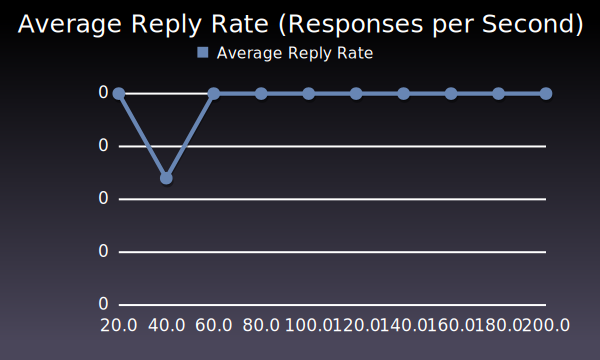
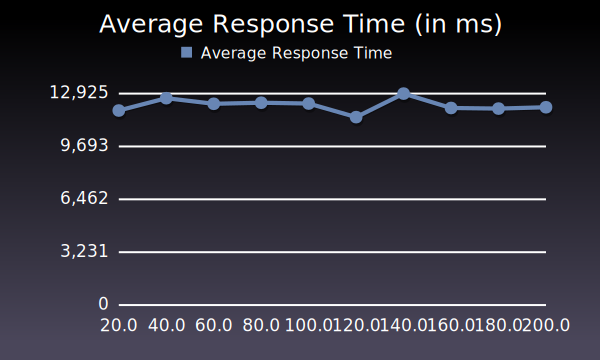

Logged Out - User Page Many Recipes
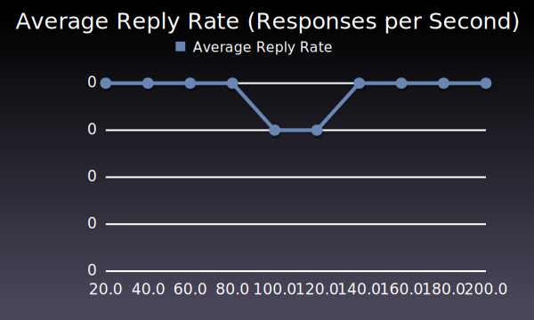
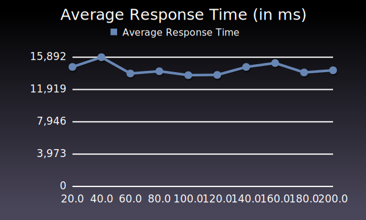

Logged Out - User Page Less Recipes
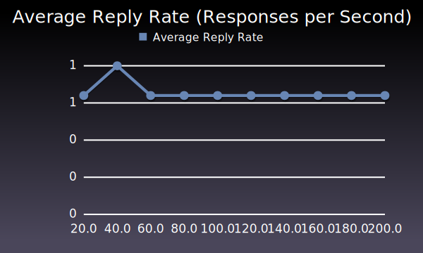
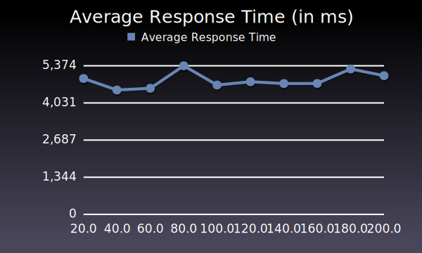

Logged Out - Recipe Page Many Ingredients
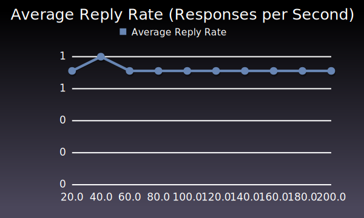
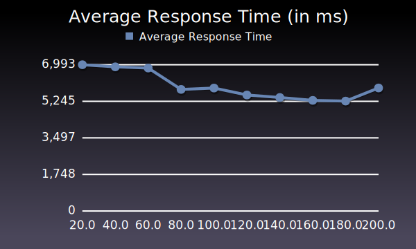

Logged Out - Recipe Page Less Ingredients
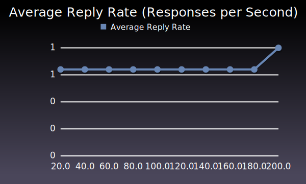
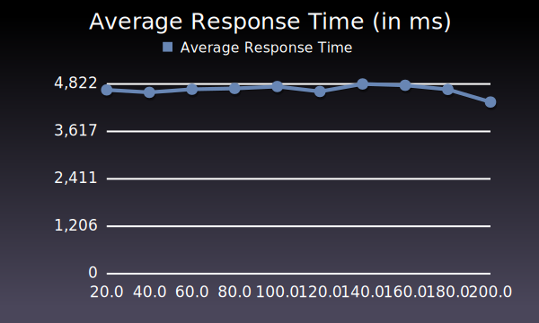
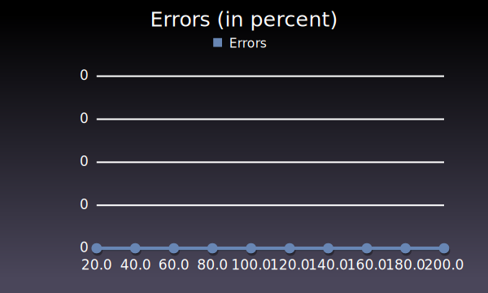
Logged In - Front Page
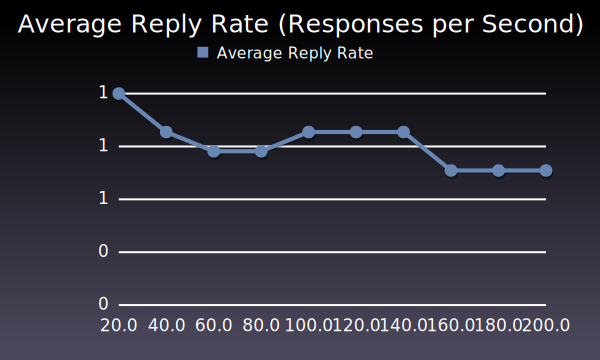
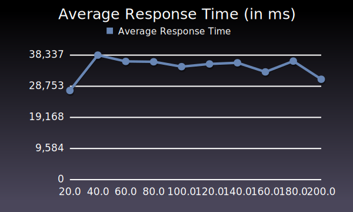

Logged In - User Page Many Recipes
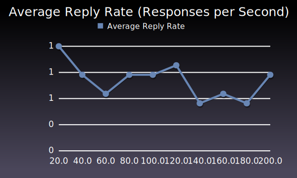
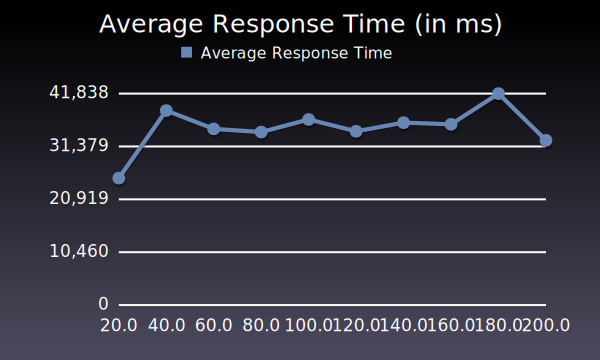
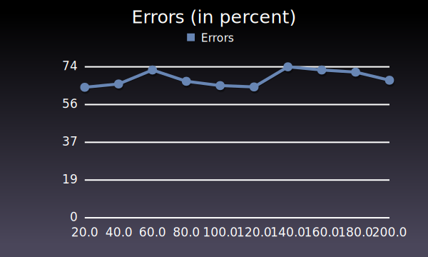
Logged In - User Page Less Recipes
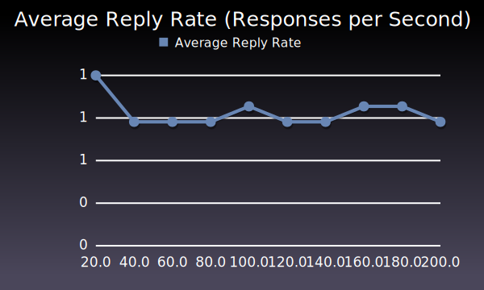
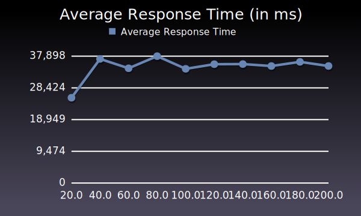
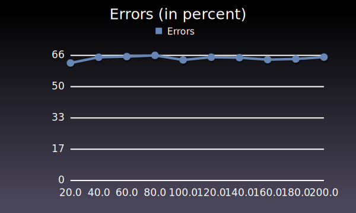
Logged In - Recipe Page Many Ingredients
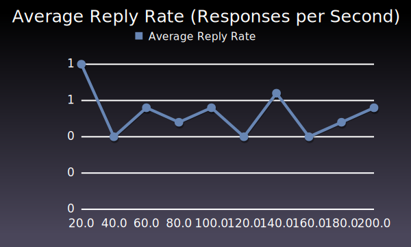
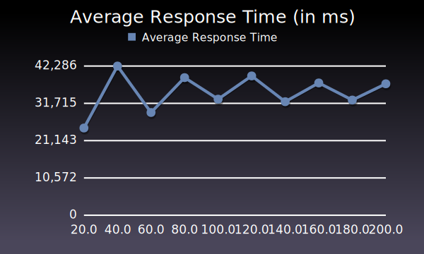
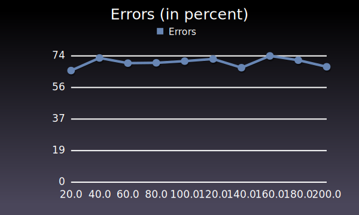
Logged In - Recipe Page Less Ingredients
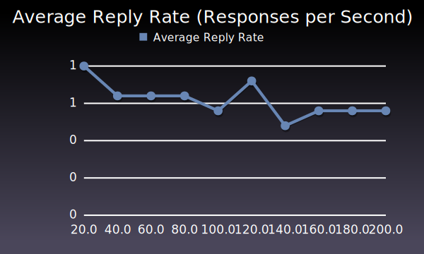
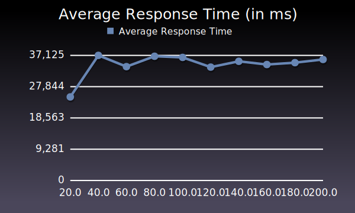
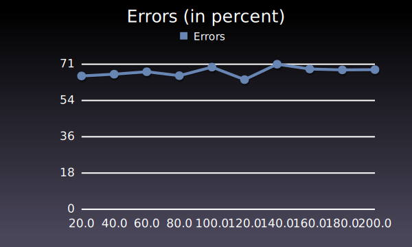